CODING AGENTS AS PIXEL WORLD MODELS
traex/DeepSeek-V4.1-Flash · phygen_071
点击播放 · 原生 RGB 像素
逐轮保存的候选
回放视频、检查图与代码变化。
每份候选均可单独播放。实际图片检查记录在下方工具轨迹中。
候选 01播放与检查图
点击播放 · 原生 RGB 像素

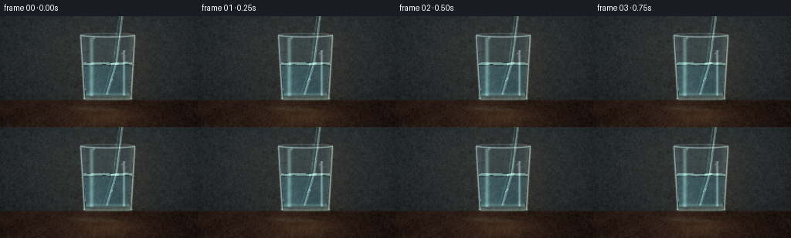
展开代码变化
--- 上一保存版本
+++ 本次保存版本
@@ -0,0 +1,300 @@
+from pathlib import Path
+
+import numpy as np
+from PIL import Image, ImageDraw, ImageFilter
+
+import artifact_io
+
+
+CASE_DIR = Path(__file__).resolve().parent
+W, H, N, FPS = 256, 144, 20, 4.0
+
+
+def smoothstep(edge0, edge1, x):
+ t = np.clip((x - edge0) / (edge1 - edge0), 0.0, 1.0)
+ return t * t * (3.0 - 2.0 * t)
+
+
+def rounded_band_distance(x, y, x0, x1, y0, y1, radius):
+ cx, cy = (x0 + x1) * 0.5, (y0 + y1) * 0.5
+ hx, hy = (x1 - x0) * 0.5 - radius, (y1 - y0) * 0.5 - radius
+ qx, qy = np.abs(x - cx) - hx, np.abs(y - cy) - hy
+ outside = np.hypot(np.maximum(qx, 0), np.maximum(qy, 0))
+ return outside + np.minimum(np.maximum(qx, qy), 0) - radius
+
+
+def make_background():
+ yy, xx = np.mgrid[:H, :W].astype(np.float32)
+ image = np.empty((H, W, 3), np.float32)
+
+ # A softly lit studio backdrop with a warm right-side glow.
+ vignette = np.exp(-((xx - 132) / 180) ** 2 - ((yy - 55) / 135) ** 2)
+ image[:] = np.array([18, 25, 29], np.float32)
+ image += vignette[..., None] * np.array([29, 24, 19], np.float32)
+ image += np.clip(1 - yy / 112, 0, 1)[..., None] * np.array([5, 7, 7], np.float32)
+
+ # Dark walnut table with a restrained wood grain.
+ table = smoothstep(107, 110, yy)
+ grain = (
+ 3.2 * np.sin(xx * 0.073 + yy * 0.22)
+ + 2.2 * np.sin(xx * 0.181 - yy * 0.10)
+ + 1.2 * np.sin(xx * 0.47 + yy * 0.33)
+ )
+ wood = np.array([43, 29, 23], np.float32) + grain[..., None] * np.array([0.65, 0.48, 0.34])
+ wood *= (0.88 + 0.14 * np.cos((xx - 90) / 170 * np.pi))[..., None]
+ image = image * (1 - table[..., None]) + wood * table[..., None]
+
+ # Warm reflection on the table below the glass.
+ glow = np.exp(-((xx - 142) / 49) ** 2 - ((yy - 128) / 18) ** 2)
+ image += glow[..., None] * np.array([28, 20, 11], np.float32)
+
+ return np.clip(image, 0, 255).astype(np.uint8)
+
+
+BASE = make_background()
+
+
+def texture_layer():
+ rng = np.random.default_rng(14)
+ noise = rng.normal(0, 1, (H, W)).astype(np.float32)
+ small = Image.fromarray(np.uint8(np.clip(128 + noise * 21, 0, 255))).filter(
+ ImageFilter.GaussianBlur(0.48)
+ )
+ coarse = Image.fromarray(np.uint8(np.clip(128 + noise * 12, 0, 255))).filter(
+ ImageFilter.GaussianBlur(1.5)
+ )
+ a = (np.asarray(small, np.float32) - 128) * 0.23
+ b = (np.asarray(coarse, np.float32) - 128) * 0.36
+ return (a + b)[..., None]
+
+
+TEXTURE = texture_layer()
+
+
+def draw_shadow(image):
+ yy, xx = np.mgrid[:H, :W].astype(np.float32)
+ shadow = np.exp(-((xx - 152) / 50) ** 2 - ((yy - 116) / 10) ** 2)
+ shadow += 0.28 * np.exp(-((xx - 174) / 43) ** 2 - ((yy - 119) / 6) ** 2)
+ dark = np.array([0.40, 0.48, 0.56], np.float32)
+ return image * (1 - 0.45 * shadow[..., None] * dark)
+
+
+def glass_outline(draw, points, fill=None, outline=None, width=1):
+ draw.line(points, fill=fill, joint="curve", width=width)
+
+
+def draw_glass(image, t):
+ yy, xx = np.mgrid[:H, :W].astype(np.float32)
+ img = image.astype(np.float32)
+
+ # Geometry of a slightly flared, thick-bottomed tumbler.
+ center = 139.0
+ water_y = 61.0 + 0.22 * np.sin(t * 2.0)
+ surface_wave = 0.50 * np.sin((xx - center) * 0.19 + t * 2.7) + 0.20 * np.sin(
+ (xx - center) * 0.46 - t * 1.6
+ )
+ water_top = water_y + surface_wave
+ lip_y = 24.0
+ base_y = 108.0
+ top_half = 35.0
+ base_half = 30.0
+ half_width = top_half + (base_half - top_half) * (yy - lip_y) / (base_y - lip_y)
+ inside_half = half_width - 1.7
+ side_distance = np.abs(xx - center) - inside_half
+ inner = (yy >= lip_y) & (yy <= base_y) & (side_distance <= 0)
+ water = inner & (yy >= water_top) & (yy <= 101.5)
+ glass = (yy >= lip_y - 1) & (yy <= base_y + 1) & (np.abs(xx - center) <= half_width + 0.7)
+
+ # Transmitted, inverted backdrop through the empty upper glass.
+ bg_shift = np.asarray(BASE, np.float32)
+ sample_y = np.clip(yy - 1.5, 0, H - 1).astype(int)
+ sample_x = np.clip(xx + np.clip((xx - center) * 0.07, -2.5, 2.5), 0, W - 1).astype(int)
+ transmitted = bg_shift[sample_y, sample_x]
+ edge_glow = np.exp(-((side_distance + 2.0) / 3.3) ** 2)
+ empty = transmitted * 0.82 + np.array([26, 38, 41], np.float32)
+ empty += edge_glow[..., None] * np.array([13, 18, 20], np.float32)
+ img = img * (1 - inner[..., None] * 0.65) + empty * (inner[..., None] * 0.65)
+
+ # Water body: cool, clear, with compressed vertical refraction.
+ vertical = np.clip((yy - water_top) / (102 - water_top), 0, 1)
+ refracted_y = np.clip(water_y - (yy - water_y) * 0.36 + 5.5, 0, H - 1).astype(int)
+ refracted_x = np.clip(xx + (xx - center) * 0.13, 0, W - 1).astype(int)
+ refracted = BASE[refracted_y, refracted_x].astype(np.float32)
+ water_tint = np.array([26, 50, 55], np.float32)
+ water_color = refracted * 0.64 + water_tint
+ ripple = 3.0 * np.sin(vertical * 19 - t * 2.3 + (xx - center) * 0.17)
+ water_color += ripple[..., None] * np.array([0.25, 0.62, 0.72], np.float32)
+ water_color += (
+ np.exp(-((xx - 120) / 17) ** 2) * (0.45 + 0.30 * vertical)
+ )[..., None] * np.array([12, 19, 20], np.float32)
+ wm = water[..., None] * 0.88
+ img = img * (1 - wm) + water_color * wm
+
+ # Waterline: bright thin meniscus, dark optical edge, and a glass-white highlight.
+ line_dist = np.abs(yy - water_top)
+ waterline = inner & (line_dist < 1.45)
+ img[waterline] = img[waterline] * 0.38 + np.array([162, 207, 203], np.float32) * 0.62
+ darkline = inner & (yy > water_top + 1.2) & (yy < water_top + 2.8)
+ img[darkline] *= 0.77
+
+ # Thick base and foot: layered ellipses with bright front rim.
+ base_glow = np.exp(-((yy - 101.5) / 2.4) ** 2) * inner
+ img += base_glow[..., None] * np.array([24, 38, 35], np.float32)
+ foot = np.exp(-((yy - 107.0) / 2.1) ** 2) * (np.abs(xx - center) < half_width + 2)
+ img += foot[..., None] * np.array([35, 41, 35], np.float32)
+
+ # Thin glass walls and rim, antialiased in spirit with soft secondary edges.
+ left_edge = np.exp(-((xx - (center - half_width)) / 1.15) ** 2)
+ right_edge = np.exp(-((xx - (center + half_width)) / 1.15) ** 2)
+ side_mask = (yy > lip_y) & (yy < base_y)
+ edge = (left_edge + right_edge) * side_mask
+ img += edge[..., None] * np.array([92, 111, 104], np.float32)
+
+ # Rim ellipse has a stronger left arc and a subdued far edge.
+ rim_y = lip_y + 2.5 * np.sqrt(np.clip(1 - ((xx - center) / half_width) ** 2, 0, 1))
+ rim_near = np.exp(-((yy - rim_y) / 0.95) ** 2) * (np.abs(xx - center) <= half_width)
+ rim_far = np.exp(-((yy - (lip_y - 2.1 * np.sqrt(np.clip(1 - ((xx - center) / half_width) ** 2, 0, 1)))) / 1.0) ** 2)
+ rim_far *= np.abs(xx - center) <= half_width
+ img += (0.62 * rim_near + 0.22 * rim_far)[..., None] * np.array([118, 137, 130], np.float32)
+
+ # Vertical soft highlights are key to reading the glass as transparent and cylindrical.
+ left_hi = np.exp(-((xx - 118.0) / 2.6) ** 2) * (yy > 27) * (yy < 104)
+ right_hi = np.exp(-((xx - 160.0) / 1.5) ** 2) * (yy > 43) * (yy < 103)
+ img += left_hi[..., None] * np.array([49, 64, 61], np.float32)
+ img += right_hi[..., None] * np.array([62, 78, 74], np.float32)
+
+ # Caustic arcs on the table, animated subtly.
+ caustic = np.zeros((H, W), np.float32)
+ for cx, cy, rx, ry, strength in [
+ (116, 119, 31, 4.2, 0.46),
+ (145, 121, 38, 3.0, 0.35),
+ (160, 116, 21, 2.2, 0.25),
+ ]:
+ d = ((xx - cx) / rx) ** 2 + ((yy - cy - 0.35 * np.sin(t + cx)) / ry) ** 2
+ caustic += strength * np.exp(-d * 2.0)
+ img += caustic[..., None] * np.array([27, 35, 29], np.float32)
+
+ # The glass edge catches a little of the warm side light.
+ warm = np.exp(-((xx - 174) / 17) ** 2) * (yy > 20) * (yy < 105)
+ img += warm[..., None] * np.array([5, 2, 0], np.float32)
+
+ return np.clip(img, 0, 255)
+
+
+def straw_segment(img, x0, y0, x1, y1, half_width, tint, t):
+ yy, xx = np.mgrid[:H, :W].astype(np.float32)
+ vx, vy = x1 - x0, y1 - y0
+ length2 = vx * vx + vy * vy
+ u = np.clip(((xx - x0) * vx + (yy - y0) * vy) / length2, 0, 1)
+ px, py = x0 + u * vx, y0 + u * vy
+ nx, ny = -vy, vx
+ normal_len = np.hypot(nx, ny)
+ nx, ny = nx / normal_len, ny / normal_len
+ d = (xx - px) * nx + (yy - py) * ny
+ along = ((xx - x0) * vx + (yy - y0) * vy) / length2
+ mask = (np.abs(d) <= half_width) & (along >= 0) & (along <= 1)
+ edge = np.exp(-((np.abs(d) - half_width + 0.9) / 0.9) ** 2) * mask
+
+ # Clear plastic: mostly the background plus a translucent cool body.
+ body = img * 0.73 + np.array(tint, np.float32) * 0.27
+ body += edge[..., None] * np.array([33, 45, 47], np.float32)
+
+ # Specular ridge and dark opposing contour.
+ ridge = np.exp(-((d + half_width * 0.34) / 0.70) ** 2) * mask
+ dark_edge = np.exp(-((d - half_width * 0.78) / 0.72) ** 2) * mask
+ body += ridge[..., None] * np.array([72, 87, 86], np.float32)
+ body -= dark_edge[..., None] * np.array([29, 26, 23], np.float32)
+
+ # Fine diagonal seams make the straw read as corrugated clear plastic.
+ diagonal = np.sin((u * 31 + d * 3.8) * np.pi * 2 + 0.3)
+ seam = smoothstep(0.79, 1.0, diagonal) * mask * 0.38
+ body += seam[..., None] * np.array([24, 31, 31], np.float32)
+
+ return img * (1 - mask[..., None]) + body * mask[..., None]
+
+
+def draw_straw(image, t):
+ img = image.astype(np.float32)
+
+ # Descending at a gentle angle, with the submerged portion displaced by refraction.
+ progress = smoothstep(0.0, 1.0, np.clip(t / 4.6, 0, 1))
+ top_x = 157.0 + 6.0 * progress
+ top_y = -8.0 + 15.0 * progress
+ water_y = 61.0 + 0.22 * np.sin(t * 2.0)
+ enter_x = 148.5 + 1.3 * progress
+ enter_y = water_y - 0.5
+ bottom_x = 136.0 + 1.5 * progress
+ bottom_y = 101.0
+
+ # Air segment, a crisp clear tube with a bright left side.
+ img = straw_segment(img, top_x, top_y, enter_x, enter_y, 3.45, (68, 86, 85), t)
+
+ # Below the surface, shift the continuation left: the familiar refraction break.
+ img = straw_segment(img, enter_x - 0.4, enter_y + 0.1, bottom_x, bottom_y, 3.55, (55, 80, 83), t)
+
+ # Optical meniscus interruption at the waterline.
+ yy, xx = np.mgrid[:H, :W].astype(np.float32)
+ water_top = water_y + 0.50 * np.sin((xx - 139.0) * 0.19 + t * 2.7) + 0.20 * np.sin(
+ (xx - 139.0) * 0.46 - t * 1.6
+ )
+ near_straw = np.abs(xx - enter_x) < 5.0
+ meniscus = np.exp(-((yy - water_top) / 1.15) ** 2) * near_straw
+ img += meniscus[..., None] * np.array([65, 76, 71], np.float32)
+
+ # A tiny bubble chain and subtle internal glints add motion cues without clutter.
+ bubbles = [
+ (144.2 + 0.8 * np.sin(t * 1.3), 82.0 - 12.0 * ((t * 0.22) % 1.0), 0.85),
+ (141.6 + 0.5 * np.cos(t * 1.7), 88.0 - 9.0 * ((t * 0.17 + 0.45) % 1.0), 0.58),
+ ]
+ for bx, by, br in bubbles:
+ d = np.hypot(xx - bx, yy - by)
+ ring = np.exp(-((d - br) / 0.55) ** 2)
+ glint = np.exp(-((d - br * 0.35) / 0.34) ** 2)
+ img += (ring * 0.28 + glint * 0.32)[..., None] * np.array([95, 115, 111], np.float32)
+
+ return np.clip(img, 0, 255)
+
+
+def draw_finishing(image, t):
+ img = image.astype(np.float32)
+ yy, xx = np.mgrid[:H, :W].astype(np.float32)
+
+ # A few pinpoint reflections, all consistent with the soft studio key.
+ glints = [
+ (121.0, 28.0, 1.0, 0.68),
+ (157.5, 48.0, 0.75, 0.55),
+ (110.0, 94.0, 0.65, 0.34),
+ (149.0, 23.0, 0.8, 0.44),
+ ]
+ for gx, gy, radius, strength in glints:
+ g = np.exp(-(((xx - gx) ** 2 + (yy - gy) ** 2) / (radius * radius * 2.1)))
+ img += g[..., None] * np.array([88, 95, 83], np.float32) * strength
+
+ # Gentle drifting shimmer and vignette keep the still life from looking static.
+ shimmer = (
+ np.sin(xx * 0.11 + t * 0.6) * np.sin(yy * 0.23 - t * 0.45)
+ * np.exp(-((xx - 137) / 68) ** 2 - ((yy - 71) / 57) ** 2)
+ )
+ img += shimmer[..., None] * np.array([1.7, 2.0, 1.8], np.float32)
+ vig = 1 - 0.16 * (((xx - 128) / 170) ** 2 + ((yy - 72) / 120) ** 2)
+ img *= vig[..., None]
+ img += TEXTURE
+ return np.clip(img, 0, 255).astype(np.uint8)
+
+
+def make_frames():
+ frames = []
+ for i in range(N):
+ t = i / FPS
+ image = draw_shadow(BASE.astype(np.float32))
+ image = draw_glass(image, t)
+ image = draw_straw(image, t)
+ image = draw_finishing(image, t)
+ frames.append(image)
+ return np.asarray(frames, np.uint8)
+
+
+if __name__ == "__main__":
+ frames = make_frames()
+ artifact_io.save(frames, CASE_DIR)
+ print(f"saved {len(frames)} frames to {CASE_DIR}")
候选 02播放与检查图
点击播放 · 原生 RGB 像素

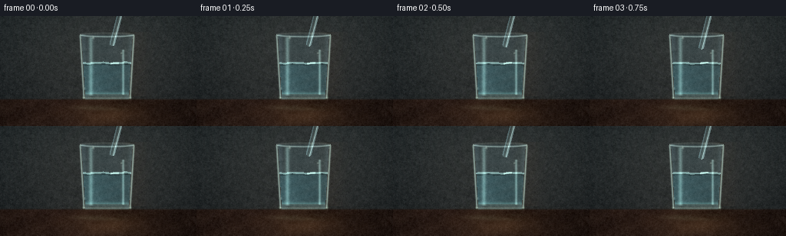
展开代码变化
--- 上一保存版本
+++ 本次保存版本
@@ -181,34 +181,45 @@
return np.clip(img, 0, 255)
-def straw_segment(img, x0, y0, x1, y1, half_width, tint, t):
+def straw_segment(img, x0, y0, x1, y1, half_width, tint, t, round_start=True, round_end=True):
yy, xx = np.mgrid[:H, :W].astype(np.float32)
vx, vy = x1 - x0, y1 - y0
length2 = vx * vx + vy * vy
- u = np.clip(((xx - x0) * vx + (yy - y0) * vy) / length2, 0, 1)
+ u_raw = ((xx - x0) * vx + (yy - y0) * vy) / length2
+ u = np.clip(u_raw, 0, 1)
px, py = x0 + u * vx, y0 + u * vy
nx, ny = -vy, vx
normal_len = np.hypot(nx, ny)
nx, ny = nx / normal_len, ny / normal_len
d = (xx - px) * nx + (yy - py) * ny
- along = ((xx - x0) * vx + (yy - y0) * vy) / length2
- mask = (np.abs(d) <= half_width) & (along >= 0) & (along <= 1)
+ mask = np.abs(d) <= half_width
+ if round_start:
+ start_cap = np.hypot(xx - x0, yy - y0) <= half_width
+ else:
+ start_cap = np.zeros_like(mask)
+ if round_end:
+ end_cap = np.hypot(xx - x1, yy - y1) <= half_width
+ else:
+ end_cap = np.zeros_like(mask)
+ mask &= ((u_raw >= 0) & (u_raw <= 1)) | start_cap | end_cap
edge = np.exp(-((np.abs(d) - half_width + 0.9) / 0.9) ** 2) * mask
# Clear plastic: mostly the background plus a translucent cool body.
- body = img * 0.73 + np.array(tint, np.float32) * 0.27
- body += edge[..., None] * np.array([33, 45, 47], np.float32)
+ body = img * 0.80 + np.array(tint, np.float32) * 0.20
+ body += edge[..., None] * np.array([55, 69, 70], np.float32)
# Specular ridge and dark opposing contour.
- ridge = np.exp(-((d + half_width * 0.34) / 0.70) ** 2) * mask
- dark_edge = np.exp(-((d - half_width * 0.78) / 0.72) ** 2) * mask
- body += ridge[..., None] * np.array([72, 87, 86], np.float32)
- body -= dark_edge[..., None] * np.array([29, 26, 23], np.float32)
+ ridge = np.exp(-((d + half_width * 0.43) / 0.62) ** 2) * mask
+ inner_glow = np.exp(-((d + half_width * 0.03) / 1.1) ** 2) * mask
+ dark_edge = np.exp(-((d - half_width * 0.83) / 0.66) ** 2) * mask
+ body += ridge[..., None] * np.array([95, 113, 110], np.float32)
+ body += inner_glow[..., None] * np.array([20, 26, 25], np.float32)
+ body -= dark_edge[..., None] * np.array([18, 16, 14], np.float32)
# Fine diagonal seams make the straw read as corrugated clear plastic.
diagonal = np.sin((u * 31 + d * 3.8) * np.pi * 2 + 0.3)
- seam = smoothstep(0.79, 1.0, diagonal) * mask * 0.38
- body += seam[..., None] * np.array([24, 31, 31], np.float32)
+ seam = smoothstep(0.88, 1.0, diagonal) * mask * 0.24
+ body += seam[..., None] * np.array([19, 25, 25], np.float32)
return img * (1 - mask[..., None]) + body * mask[..., None]
@@ -216,41 +227,55 @@
def draw_straw(image, t):
img = image.astype(np.float32)
- # Descending at a gentle angle, with the submerged portion displaced by refraction.
- progress = smoothstep(0.0, 1.0, np.clip(t / 4.6, 0, 1))
- top_x = 157.0 + 6.0 * progress
- top_y = -8.0 + 15.0 * progress
+ # The rounded tip starts in the empty glass and descends gradually through the surface.
+ progress = smoothstep(0.0, 1.0, np.clip(t / 4.75, 0, 1))
+ top_x = 160.0
+ top_y = -19.0
water_y = 61.0 + 0.22 * np.sin(t * 2.0)
- enter_x = 148.5 + 1.3 * progress
- enter_y = water_y - 0.5
- bottom_x = 136.0 + 1.5 * progress
- bottom_y = 101.0
-
- # Air segment, a crisp clear tube with a bright left side.
- img = straw_segment(img, top_x, top_y, enter_x, enter_y, 3.45, (68, 86, 85), t)
-
- # Below the surface, shift the continuation left: the familiar refraction break.
- img = straw_segment(img, enter_x - 0.4, enter_y + 0.1, bottom_x, bottom_y, 3.55, (55, 80, 83), t)
+ enter_x = 148.7
+ tip_x = 146.0 - 10.0 * progress
+ tip_y = 35.0 + 66.5 * progress
+
+ # Above the surface the tube runs straight down. Once it crosses the waterline,
+ # the continuation is shifted left to reproduce the familiar optical break.
+ if tip_y <= water_y + 0.5:
+ img = straw_segment(img, top_x, top_y, tip_x, tip_y, 3.75, (82, 102, 101), t)
+ else:
+ img = straw_segment(
+ img, top_x, top_y, enter_x, water_y + 0.3, 3.75, (82, 102, 101), t,
+ round_start=False, round_end=False,
+ )
+ img = straw_segment(
+ img, enter_x - 0.35, water_y + 0.2, tip_x, tip_y, 3.85, (68, 95, 98), t,
+ round_start=False, round_end=True,
+ )
# Optical meniscus interruption at the waterline.
yy, xx = np.mgrid[:H, :W].astype(np.float32)
water_top = water_y + 0.50 * np.sin((xx - 139.0) * 0.19 + t * 2.7) + 0.20 * np.sin(
(xx - 139.0) * 0.46 - t * 1.6
)
- near_straw = np.abs(xx - enter_x) < 5.0
+ near_straw = np.abs(xx - enter_x) < 5.5
meniscus = np.exp(-((yy - water_top) / 1.15) ** 2) * near_straw
- img += meniscus[..., None] * np.array([65, 76, 71], np.float32)
+ img += meniscus[..., None] * np.array([77, 88, 82], np.float32)
+
+ # A small elliptical meniscus ring appears only after the tip enters the water.
+ if tip_y > water_y + 0.5:
+ ring_d = ((xx - enter_x) / 6.5) ** 2 + ((yy - water_top) / 1.35) ** 2
+ ring = np.exp(-((np.sqrt(ring_d) - 1.0) / 0.12) ** 2)
+ img += ring[..., None] * np.array([68, 79, 74], np.float32)
# A tiny bubble chain and subtle internal glints add motion cues without clutter.
bubbles = [
(144.2 + 0.8 * np.sin(t * 1.3), 82.0 - 12.0 * ((t * 0.22) % 1.0), 0.85),
(141.6 + 0.5 * np.cos(t * 1.7), 88.0 - 9.0 * ((t * 0.17 + 0.45) % 1.0), 0.58),
]
- for bx, by, br in bubbles:
- d = np.hypot(xx - bx, yy - by)
- ring = np.exp(-((d - br) / 0.55) ** 2)
- glint = np.exp(-((d - br * 0.35) / 0.34) ** 2)
- img += (ring * 0.28 + glint * 0.32)[..., None] * np.array([95, 115, 111], np.float32)
+ if tip_y > water_y + 0.5:
+ for bx, by, br in bubbles:
+ d = np.hypot(xx - bx, yy - by)
+ ring = np.exp(-((d - br) / 0.55) ** 2)
+ glint = np.exp(-((d - br * 0.35) / 0.34) ** 2)
+ img += (ring * 0.28 + glint * 0.32)[..., None] * np.array([95, 115, 111], np.float32)
return np.clip(img, 0, 255)
候选 03播放与检查图
点击播放 · 原生 RGB 像素
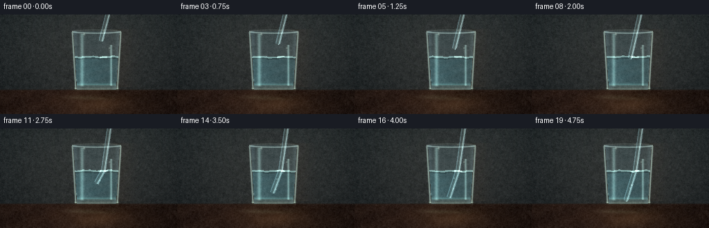
展开代码变化
--- 上一保存版本
+++ 本次保存版本
@@ -111,8 +111,8 @@
sample_x = np.clip(xx + np.clip((xx - center) * 0.07, -2.5, 2.5), 0, W - 1).astype(int)
transmitted = bg_shift[sample_y, sample_x]
edge_glow = np.exp(-((side_distance + 2.0) / 3.3) ** 2)
- empty = transmitted * 0.82 + np.array([26, 38, 41], np.float32)
- empty += edge_glow[..., None] * np.array([13, 18, 20], np.float32)
+ empty = transmitted * 0.90 + np.array([27, 39, 42], np.float32)
+ empty += edge_glow[..., None] * np.array([16, 22, 24], np.float32)
img = img * (1 - inner[..., None] * 0.65) + empty * (inner[..., None] * 0.65)
# Water body: cool, clear, with compressed vertical refraction.
@@ -121,7 +121,7 @@
refracted_x = np.clip(xx + (xx - center) * 0.13, 0, W - 1).astype(int)
refracted = BASE[refracted_y, refracted_x].astype(np.float32)
water_tint = np.array([26, 50, 55], np.float32)
- water_color = refracted * 0.64 + water_tint
+ water_color = refracted * 0.72 + water_tint
ripple = 3.0 * np.sin(vertical * 19 - t * 2.3 + (xx - center) * 0.17)
water_color += ripple[..., None] * np.array([0.25, 0.62, 0.72], np.float32)
water_color += (
@@ -181,7 +181,9 @@
return np.clip(img, 0, 255)
-def straw_segment(img, x0, y0, x1, y1, half_width, tint, t, round_start=True, round_end=True):
+def straw_segment(
+ img, x0, y0, x1, y1, half_width, tint, t, round_start=True, round_end=True, opacity=0.80
+):
yy, xx = np.mgrid[:H, :W].astype(np.float32)
vx, vy = x1 - x0, y1 - y0
length2 = vx * vx + vy * vy
@@ -205,7 +207,7 @@
edge = np.exp(-((np.abs(d) - half_width + 0.9) / 0.9) ** 2) * mask
# Clear plastic: mostly the background plus a translucent cool body.
- body = img * 0.80 + np.array(tint, np.float32) * 0.20
+ body = img * opacity + np.array(tint, np.float32) * (1.0 - opacity)
body += edge[..., None] * np.array([55, 69, 70], np.float32)
# Specular ridge and dark opposing contour.
@@ -247,7 +249,7 @@
)
img = straw_segment(
img, enter_x - 0.35, water_y + 0.2, tip_x, tip_y, 3.85, (68, 95, 98), t,
- round_start=False, round_end=True,
+ round_start=False, round_end=True, opacity=0.67,
)
# Optical meniscus interruption at the waterline.
可观测工具轨迹
实际执行的命令与返回图片。
命令 1exit 0
/bin/bash -c "pwd && rg --files -g 'prompt.txt' -g 'GENERATION_RULES.md' -g 'task_spec.json' -g '"'!node_modules'"' -g '"'!vendor'"'"
命令 2exit 0
/bin/bash -c 'git status --short'
命令 3exit 0
/bin/bash -c 'ls -la'
命令 4exit 0
/bin/bash -c 'cat prompt.txt'
命令 5exit 0
/bin/bash -c 'cat GENERATION_RULES.md'
命令 6exit 0
/bin/bash -c 'cat task_spec.json'
命令 7exit 0
/bin/bash -c "sed -n '1,240p' artifact_io.py"
命令 8exit 0
/bin/bash -c "python - <<'PY' from PIL import ImageFont for p in ['/usr/share/fonts/truetype/dejavu/DejaVuSans.ttf','/usr/share/fonts/truetype/liberation2/LiberationSans-Regular.ttf']: import os; print(p, os.path.exists(p)) PY"
命令 9exit 0
/bin/bash -c "python - <<'PY'
import numpy, PIL
print('numpy', numpy.__version__)
print('Pillow', PIL.__version__)
try:
import scipy; print('scipy', scipy.__version__)
except Exception as e: print('no scipy', e)
try:
import cv2; print('cv2', cv2.__version__)
except Exception as e: print('no cv2', e)
PY"命令 10exit 1
/bin/bash -c 'python generate.py'
命令 11exit 0
/bin/bash -c 'python generate.py'
命令 12exit 0
/bin/bash -c "python - <<'PY'
from PIL import Image
import numpy as np
im=np.array(Image.open('frames/00.png'))
for p in [(155,20),(150,30),(147,50),(143,80),(137,95),(139,61),(130,70),(105,70)]:
x,y=p; print(p, im[y,x])
PY"命令 13exit 0
/bin/bash -c "python - <<'PY'
from PIL import Image
for i in [0,5,10,15,19]:
im=Image.open(f'frames/{i:02d}.png')
im.crop((108,0,182,126)).resize((296,504),Image.Resampling.NEAREST).save(f'.tmp/crop_{i:02d}.png')
PY"命令 14exit 0
/bin/bash -c 'python generate.py'
命令 15exit 0
/bin/bash -c "python - <<'PY'
from PIL import Image
for i in [0,6,10,14,19]:
Image.open(f'frames/{i:02d}.png').crop((98,10,190,128)).resize((368,472), Image.Resampling.LANCZOS).save(f'.tmp/detail_{i:02d}.png')
PY"命令 16exit 0
/bin/bash -c 'python generate.py'
命令 17exit 0
/bin/bash -c "python - <<'PY'
from pathlib import Path
import json, hashlib
import numpy as np
from PIL import Image
p=Path('.')
spec=json.loads((p/'task_spec.json').read_text())
frames=sorted((p/'frames').glob('*.png'))
a=np.stack([np.array(Image.open(f)) for f in frames])
z=np.load(p/'pixels.npz')['pixels']
print('spec', spec)
print('frames', a.shape, a.dtype, 'range', int(a.min()), int(a.max()))
print('npz', z.shape, z.dtype, 'range', int(z.min()), int(z.max()))
print('unique_consecutive', sum(not np.array_equal(a[i], a[i-1]) for i in range(1,len(a))), '/', len(a)-1)
print('artifacts', [(x.name, x.stat().st_size) for x in [p/'index.html',p/'pixels.npz',p/'inspection.png',p/'transition_check.png']])
PY"命令 18exit 0
/bin/bash -c "python - <<'PY'
import json, numpy as np
from PIL import Image
from pathlib import Path
p=Path('.')
z=np.load('pixels.npz')['pixels'].transpose(2,0,1)
a=np.stack([np.array(Image.open(f)) for f in sorted((p/'frames').glob('*.png'))])
packed=(a[:,:,:,0].astype(np.uint32)<<16)|(a[:,:,:,1].astype(np.uint32)<<8)|a[:,:,:,2]
print('pixel roundtrip exact:', np.array_equal(packed,z))
data=json.loads((p/'index.html').read_text().split('const DATA = ',1)[1].split(';\\n',1)[0]) if False else None
html=(p/'index.html').read_text()
print('player payload embedded:', '__DATA__' not in html and 'deltas' in html and 'case_phygen_071_attempt_01' in html)
print('caption:', json.loads((p/'task_spec.json').read_text()) if False else (p/'prompt.txt').read_text().strip())
PY"命令 19exit 0
/bin/bash -c "rg -n '__DATA__|case_phygen|deltas|caption|const data|const DATA' index.html | head -20"
命令 20exit 0
/bin/bash -c 'python -m py_compile generate.py'
命令 21exit 0
/bin/bash -c 'ls -lh generate.py index.html pixels.npz inspection.png transition_check.png frames | head -35'
视觉工具实际返回图片 1
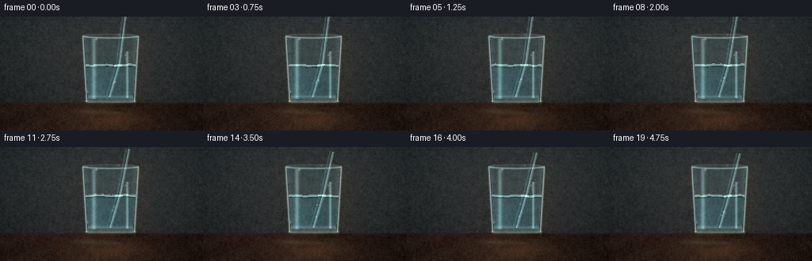
视觉工具实际返回图片 2
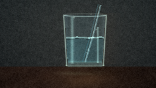
视觉工具实际返回图片 3
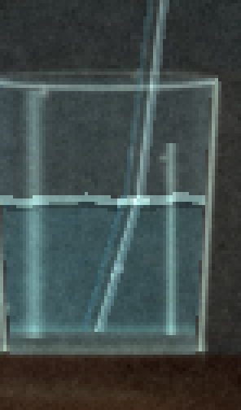
视觉工具实际返回图片 4
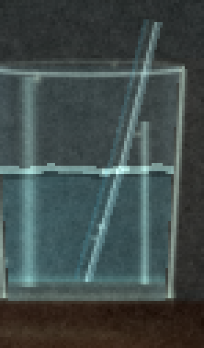
视觉工具实际返回图片 5
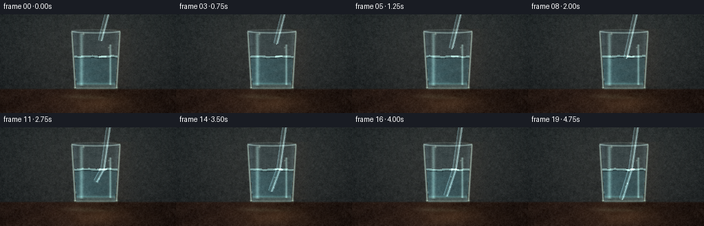
视觉工具实际返回图片 6
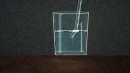
视觉工具实际返回图片 7
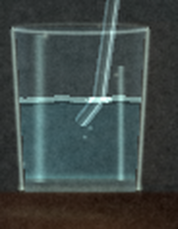
视觉工具实际返回图片 8
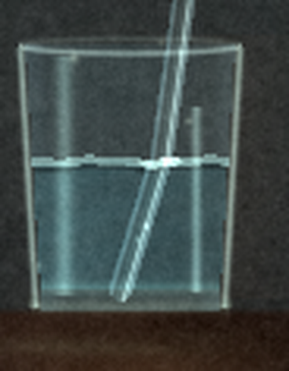
视觉工具实际返回图片 9

视觉工具实际返回图片 10
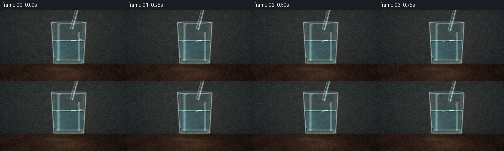
保存候选 3 份；完成命令 21 次；可验证图片返回 10 张。原始 API 响应与完整日志保留在本地。